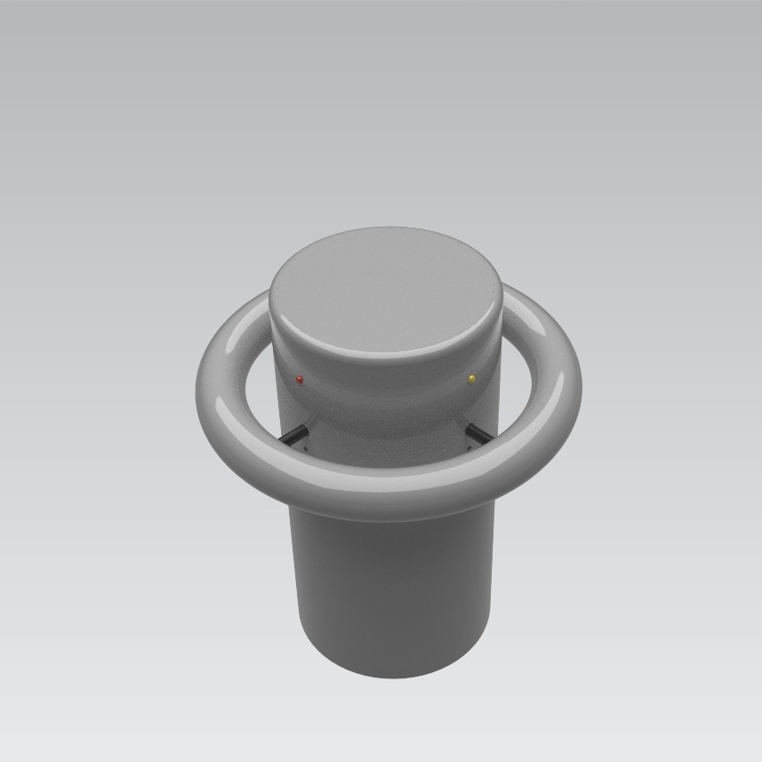
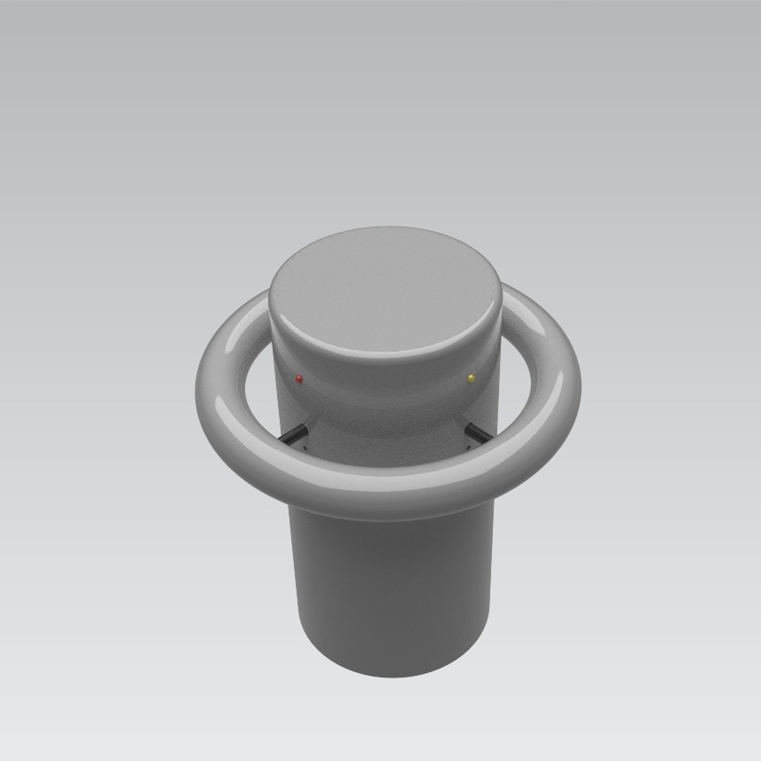

The wave sensing buoy is a project fundamentally designed with safety in mind. Utilizing components such as the GAC mini IMU, Elegoo Uno, four RGD LEDs, an LCD screen, and polyurethane expanding foam, our buoy has the ability to establish a baseline wave acceleration, sense the presence of dangerous waves, and display color-coordinated warnings based on low, medium, and high-strength waves.
It also stores this information on the LCD screen over 16 frames of time intervals based on user preferences. These multifaceted functions allow the device to act both as a method of promoting safety and as a means of collecting valuable research data on wave patterns in specific areas.